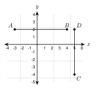
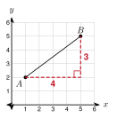
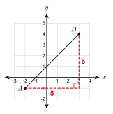
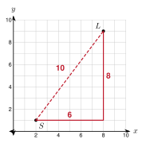

2.4 Distance on the Coordinate Plane
- Find the distance between two points on a horizontal or vertical line
- Find the distance between any two points with a right triangle
- Use the distance formula
- Use distance to compare points, check a triangle, and find a missing coordinate
Warm-Up
1. Find the hypotenuse of a right triangle with legs 5 and 12.
c = 13
2. Evaluate (−2 − 4)2 + (5 − 1)2.
36 + 16 = 52
3. Plot A(−3, 2) and B(4, 2). How many units apart are they?
7 units
2.4.1Horizontal and Vertical Distance
- Same y: distance = |x2 − x1|.
- Same x: distance = |y2 − y1|.
- A distance is never negative.

A(−3, 2) and B(4, 2) have the same y. AB = |4 − (−3)| = 7.
C(5, −4) and D(5, 2) have the same x. CD = |2 − (−4)| = 6.
a. P(−5, −1) and Q(3, −1)
|3 − (−5)| = 8
b. R(−2, 6) and S(−2, −3)
|6 − (−3)| = 9
2.4.2Slanted Distance: Draw a Right Triangle
- Draw a right triangle. Its legs are the horizontal and vertical changes.
- Count or subtract to find the legs. Then use a2 + b2 = c2.

Draw the right triangle with the right angle at (5, 2).
Horizontal leg: 5 − 1 = 4. Vertical leg: 5 − 2 = 3.
AB2 = 42 + 32 = 25, so AB = 5.

Horizontal leg: 3 − (−2) = 5. Vertical leg: 4 − (−1) = 5.
AB2 = 52 + 52 = 50. AB = 50 = 52 ≈ 7.1.
Legs: 2 − (−3) = 5 and |−8 − 4| = 12. PQ = 25 + 144 = 13.

2.4.3The Distance Formula
- Distance formula: d = (x2 − x1)2 + (y2 − y1)2.
- The two parts under the radical are the squares of the horizontal and vertical changes.
- Subtract the x's and the y's in the same order.
Subtracting a negative number adds. For x1 = −4 and x2 = 2: x2 − x1 = 2 − (−4) = 6, not −2. Put the second point in parentheses.
d = (2 − (−4))2 + (−5 − 3)2 = 62 + (−8)2
d = 36 + 64 = 100 = 10
d = (−3 − 1)2 + (4 − (−2))2 = 16 + 36 = 52
52 = 213 ≈ 7.2.
d = (−4 − 2)2 + (1 − (−6))2 = 36 + 49 = 85 ≈ 9.2
2.4.4Using Distance
- Compare distances to see which point is closer.
- A triangle with two equal sides is isosceles.
- Squaring both sides can give two answers for a missing coordinate.
MP = 32 + 42 = 5.
MQ = (−6)2 + 32 = 45 ≈ 6.7.
5 < 6.7, so P is closer.
AB = |7 − 1| = 6.
AC = 32 + 42 = 5 and BC = (−3)2 + 42 = 5.
Because AC = BC, triangle ABC is isosceles.
(1 − 4)2 + (k − 2)2 = 5 so 9 + (k − 2)2 = 25
(k − 2)2 = 16, so k − 2 = 4 or k − 2 = −4. Then k = 6 or k = −2.
There are two points: (1, 6) and (1, −2).

Streets: 6 miles east and 8 miles north is 6 + 8 = 14 miles.
Drone: 62 + 82 = 10 miles.
The drone's trip is 14 − 10 = 4 miles shorter.
(k + 2)2 + 36 = 100, so (k + 2)2 = 64 and k + 2 = ± 8. Then k = 6 or k = −10.
1. Distance between points: draw a right triangle with horizontal and vertical legs.
2. The slanted segment is the hypotenuse.
3. In the distance formula, square each change, add, and take the square root.
4. The smaller distance means the point is closer.
5. A missing coordinate can have two answers.
Practice
Find each distance. Same row or column.
1. A(−7, 3) and B(2, 3)
9
2. C(4, −6) and D(4, 5)
11
3. E(−8, −2) and F(−1, −2)
7
4. G(0, −9) and H(0, −1)
8
Draw the right triangle on graph paper. Give the exact distance, and round to the nearest tenth when it is not a whole number.
5. (0, 0) and (5, 12)
13
6. (−2, 3) and (4, −5)
36 + 64 = 10
7. (0, 0) and (7, 24)
25
8. (−3, −1) and (2, 3)
41 ≈ 6.4
9. (3, 5) and (−2, −4)
106 ≈ 10.3
Use the distance formula. Give the exact distance and round to the nearest tenth when needed.
10. (−1, 6) and (3, −2)
80 = 45 ≈ 8.9
11. (5, 1) and (−3, −2)
73 ≈ 8.5
12. (−6, 0) and (0, −6)
72 = 62 ≈ 8.5
13. (3, −7) and (−2, 5)
13
Use distance to decide.
14. Which point is closer to the origin, A(3, −4) or B(−2, 5)? Round to the nearest tenth.
OA = 5 and OB = 29 ≈ 5.4. A is closer.
15. Is the triangle with X(0, 0), Y(8, 0), and Z(4, 3) isosceles? Show the lengths.
XY = 8, XZ = 5, YZ = 5. Because XZ = YZ, it is isosceles.
16. The point (x, 1) is 5 units from (2, 5). Find x.
(x − 2)2 + 16 = 25, so x − 2 = ± 3. x = 5 or x = −1.
Real problems. Each grid unit is 1 mile.
17. The park is at (−3, −2) and the mall is at (5, 4). How long is a drone's straight trip? How long is the trip by streets?
Drone: 64 + 36 = 10 mi. Streets: 8 + 6 = 14 mi.
18. A drone flies from (1, 1) to (13, 6). A car goes 12 miles east and 5 miles north. How many miles shorter is the drone's trip?
Drone: 144 + 25 = 13 mi. Car: 17 mi. It is 4 mi shorter.
Find the mistake.
19. Mohammed says the distance from (2, 3) to (5, 7) is (5 − 2) + (7 − 3) = 7. What is wrong? What is the distance?
He added the legs. He needs the hypotenuse: 32 + 42 = 5.
Test practice
20. On a coordinate grid, point R is at (−2, 6) and point T is at (10, −3). What is the distance, in units, from R to T?
A. 3
B. 15 ← correct
C. 21
D. 225
21. Triangle ABC has vertices A(0, 1), B(6, 1), and C(3, 5). Which statement about the triangle is true?
A. The triangle is equilateral.
B. The triangle is isosceles with two sides of length 5. ← correct
C. The triangle is scalene.
D. The triangle has a right angle at C.
Challenge
22. Find the point on the x-axis that is the same distance from A(1, 3) and B(5, −1).
Let the point be (x, 0). (x − 1)2 + 9 = (x − 5)2 + 1 gives 8x = 16, so x = 2. The point is (2, 0). Check: both distances are 10.